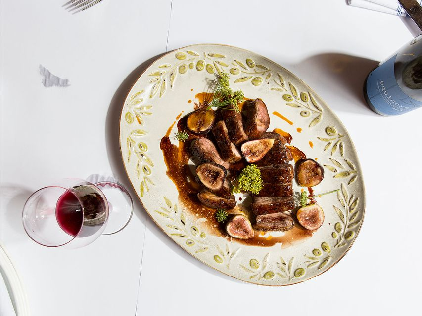

Roast Duck with Figs
Ingredients
- 2 cups ruby port
- 1 cup red wine
- 3 Tbsp. whole black peppercorns
- 2 shallots, thinly sliced
- 1 bunch thyme
- 8 duck breasts
- Kosher salt and freshly ground black pepper
- 2 Tbsp. unsalted butter
- 1 lb. purple figs
Directions
- In a small saucepan, combine the port with the wine, peppercorns, and shallots and bring to a boil.
Reduce the heat to maintain a simmer and cook until reduced to 3⁄4 cup, about 25 minutes.
Remove the port reduction from the heat, pour through a fine sieve, and discard the solids.
- Season the flesh side of each duck breast with salt and pepper. Arrange 4 duck breasts, skin side-down,
in a 12-inch skillet. Place the skillet over medium-high heat and cook the duck breasts,
without flipping, until some of their fat renders and their skin is crisp,5 to 6 minutes.
Flip the duck breasts, pour in half the port reduction and cook, basting with sauce,
until the duck is browned and cooked to desired doneness, about 3 minutes for medium rare or
until an instant-read thermometer inserted into the thickest part of the duck reads 130.
Transfer the duck breasts to a cutting board and let stand 10 minutes; reserve the reduction.
Repeat cooking with the remaining 4 duck breasts and the port reduction.
- Wipe the skillet clean, add the butter, and melt over medium-high heat. Add the figs and cook,
turning, until golden, about 3 minutes. Remove from the figs from the heat and cut the duck breasts into thin slices.
Transfer the figs and duck slices to a serving platter and drizzle with the reserved reduction before serving.
Contact me
Email Me
original recipe